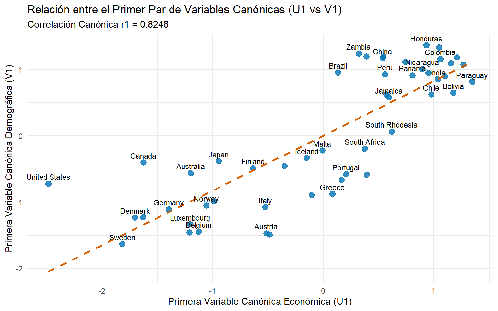

Capítulo 10 Análisis de Correlación Canónica
El Análisis de Correlación Canónica (CCA, por sus siglas en inglés Canonical Correlation Analysis), desarrollado por Harold Hotelling (1936), es una técnica estadística multivariante diseñada para estudiar y cuantificar la relación lineal existente entre dos conjuntos (o bloques) de variables cuantitativas medidas sobre los mismos \(n\) individuos.
Mientras que la regresión lineal múltiple analiza la relación entre un conjunto de variables predictoras \(\mathbf{X}\) y una única variable respuesta \(Y\), el Análisis de Correlación Canónica generaliza este enfoque permitiendo que ambos lados de la relación sean multidimensionales: un bloque \(\mathbf{X}\) de \(p\) variables y un bloque \(\mathbf{Y}\) de \(q\) variables.
10.1 Fundamentos Teóricos y Supuestos del Modelo
El objetivo central del CCA es encontrar pares de combinaciones lineales —denominadas variables canónicas— dentro de cada conjunto de datos, de tal forma que la correlación lineal entre cada par sea máxima.
Supuestos del Modelo
- Linealidad: Las relaciones entre las variables dentro de cada conjunto y entre ambos conjuntos deben ser lineales.
- Normalidad Multivariante: Para realizar contrastes de significación inferenciales (como la prueba de Bartlett), se requiere que ambos bloques sigan conjuntamente una distribución normal multivariante.
- Ausencia de Multicolinealidad Estricta: Las matrices de varianzas-covarianzas de cada conjunto (\(\boldsymbol{\Sigma}_{XX}\) y \(\boldsymbol{\Sigma}_{YY}\)) deben ser definidas positivas (invertibles), por lo que ninguna variable debe ser combinación lineal exacta de las demás.
- Tamaño Muestral: Se recomienda contar con un número de observaciones significativamente mayor que el número total de variables (\(n \gg p + q\)) para garantizar la estabilidad de los coeficientes canónicos.
10.2 Formulación Matemática y Extracción de Variables Canónicas
Sean dos vectores aleatorios \(\mathbf{X} = (X_1, X_2, \dots, X_p)'\) e \(\mathbf{Y} = (Y_1, Y_2, \dots, Y_q)'\) observados sobre \(n\) individuos, con vector de medias conjunto y matriz de covarianzas particionada:
\[\boldsymbol{\Sigma} = \begin{pmatrix} \boldsymbol{\Sigma}_{XX} & \boldsymbol{\Sigma}_{XY} \\ \boldsymbol{\Sigma}_{YX} & \boldsymbol{\Sigma}_{YY} \end{pmatrix}\]
donde \(\boldsymbol{\Sigma}_{XX}\) (\(p \times p\)) y \(\boldsymbol{\Sigma}_{YY}\) (\(q \times q\)) son las matrices de covarianzas dentro de cada grupo, y \(\boldsymbol{\Sigma}_{XY} = \boldsymbol{\Sigma}_{YX}'\) (\(p \times q\)) es la matriz de covarianzas entre ambos bloques.
Definición de los Pares Canónicos
Se definen las combinaciones lineales para el \(i\)-ésimo par canónico como:
\[U_i = \mathbf{a}_i'\mathbf{X} = a_{i1}X_1 + a_{i2}X_2 + \dots + a_{ip}X_p\] \[V_i = \mathbf{b}_i'\mathbf{Y} = b_{i1}Y_1 + b_{i2}Y_2 + \dots + b_{iq}Y_q\]
El problema de optimización consiste en hallar los vectores de pesos canónicos \(\mathbf{a}_1\) y \(\mathbf{b}_1\) que maximicen la correlación de Pearson entre \(U_1\) y \(V_1\):
\[\rho_1 = \text{Corr}(U_1, V_1) = \frac{\mathbf{a}_1'\boldsymbol{\Sigma}_{XY}\mathbf{b}_1}{\sqrt{(\mathbf{a}_1'\boldsymbol{\Sigma}_{XX}\mathbf{a}_1)(\mathbf{b}_1'\boldsymbol{\Sigma}_{YY}\mathbf{b}_1)}}\]
sujeto a las restricciones de varianza unitaria:
\[\text{Var}(U_i) = \mathbf{a}_i'\boldsymbol{\Sigma}_{XX}\mathbf{a}_i = 1 \quad \text{y} \quad \text{Var}(V_i) = \mathbf{b}_i'\boldsymbol{\Sigma}_{YY}\mathbf{b}_i = 1\]
Solución mediante Autovalores y Autovectores
Aplicando multiplicadores de Lagrange, la obtención de los vectores \(\mathbf{a}_i\) y \(\mathbf{b}_i\) se reduce a resolver las siguientes ecuaciones de valores y vectores propios:
\[\left(\boldsymbol{\Sigma}_{XX}^{-1}\boldsymbol{\Sigma}_{XY}\boldsymbol{\Sigma}_{YY}^{-1}\boldsymbol{\Sigma}_{YX}\right)\mathbf{a}_i = \rho_i^2 \mathbf{a}_i\] \[\left(\boldsymbol{\Sigma}_{YY}^{-1}\boldsymbol{\Sigma}_{YX}\boldsymbol{\Sigma}_{XX}^{-1}\boldsymbol{\Sigma}_{XY}\right)\mathbf{b}_i = \rho_i^2 \mathbf{b}_i\]
- Los valores propios \(\lambda_i = \rho_i^2\) corresponden al cuadrado de las correlaciones canónicas (ordenados de forma decreciente: \(\rho_1 \ge \rho_2 \ge \dots \ge \rho_m\)).
- El número máximo de pares canónicos que se pueden extraer es \(m = \min(p, q)\).
- Los pares sucesivos \((U_i, V_i)\) son ortogonales (incorrelados) respecto a los pares anteriores: \(\text{Corr}(U_i, U_j) = 0\), \(\text{Corr}(V_i, V_j) = 0\) y \(\text{Corr}(U_i, V_j) = 0\) para todo \(i \neq j\).
10.3 Pruebas de Significación e Interpretación
- Contraste Secuencial de Significación (\(\Lambda\) de Wilks)
Para determinar cuántos pares canónicos son estadísticamente significativos, se contrasta secuencialmente la hipótesis nula de que las correlaciones canónicas desde el paso \(k\) hasta \(m\) son cero (\(H_0: \rho_k = \rho_{k+1} = \dots = \rho_m = 0\)). Se utiliza el estadístico Lambda de Wilks:
\[\Lambda_k = \prod_{i=k}^{m} (1 - \rho_i^2)\]
Mediante la aproximación \(\chi^2\) de Bartlett:
\[\chi^2 = -\left[ n - 1 - \frac{1}{2}(p + q + 1) \right] \ln(\Lambda_k) \sim \chi^2_{(p - k + 1)(q - k + 1)}\]
Si se rechaza \(H_0\) (\(p\text{-valor} < 0.05\)), se concluye que al menos el \(k\)-ésimo par canónico es estadísticamente significativo y se procede a evaluar el siguiente par (\(k + 1\)).
- Pesos Canónicos vs. Cargas Canónicas
- Pesos Canónicos (\(\mathbf{a}_i, \mathbf{b}_i\)): Son los coeficientes directos de la combinación lineal. Cuando se estandarizan, permiten comparar la contribución relativa de cada variable; sin embargo, pueden volverse inestables si existe alta multicolinealidad dentro de un bloque.
- Cargas Canónicas (Correlaciones Estructurales): Representan la correlación lineal simple entre cada variable original y su propia variable canónica: \(\text{Corr}(X_j, U_i)\) y \(\text{Corr}(Y_l, V_i)\). Suelen preferirse para la interpretación sustantiva, ya que no se ven afectadas por la multicolinealidad.
- Índice de Redundancia de Stewart-Love
Una correlación canónica alta (\(\rho_i\)) indica fuerte asociación entre las combinaciones lineales \(U_i\) y \(V_i\), pero no garantiza que dichas variables canónicas expliquen una proporción elevada de la varianza original de los bloques. El índice de redundancia mide la proporción de la varianza total de un conjunto (por ejemplo, \(\mathbf{Y}\)) explicada por la variable canónica del otro conjunto (\(U_i\)):
\[Rd(Y \mid U_i) = \left( \frac{1}{q} \sum_{l=1}^{q} \text{Corr}^2(Y_l, V_i) \right) \cdot \rho_i^2\]
10.4 Implementación Práctica en R
A continuación se desarrolla un ejemplo completo utilizando el conjunto de datos clásico LifeCycleSavings incluido en R base. Este dataset contiene 5 variables económicas y demográficas medidas en \(n = 50\) países:
- Bloque Económico (\(\mathbf{X}\)):
sr: Tasa de ahorro personal agregado.dpi: Ingreso disponible per cápita real.ddpi: Tasa porcentual de crecimiento del ingreso disponible per cápita.
- Bloque Demográfico (\(\mathbf{Y}\)):
pop15: Porcentaje de población menor de 15 años.pop75: Porcentaje de población mayor de 75 años.
El objetivo es analizar la relación multivariante entre la estructura demográfica de los países y su comportamiento económico de ahorro e ingreso.
# 1. Carga de librerías necesarias
library(CCA) # Análisis de Correlación Canónica y gráficos
library(CCP) # Pruebas de significación (Wilks, Pillai, Hotelling, Roy)
library(ggplot2) # Visualización avanzada
# 2. Carga y preparación de los datos
data("LifeCycleSavings")
head(LifeCycleSavings) sr pop15 pop75 dpi ddpi
Australia 11.43 29.35 2.87 2329.68 2.87
Austria 12.07 23.32 4.41 1507.99 3.93
Belgium 13.17 23.80 4.43 2108.47 3.82
Bolivia 5.75 41.89 1.67 189.13 0.22
Brazil 12.88 42.19 0.83 728.47 4.56
Canada 8.79 31.72 2.85 2982.88 2.43# Definición de los dos bloques de variables (estandarizados para facilitar interpretación)
X <- scale(LifeCycleSavings[, c("sr", "dpi", "ddpi")])
Y <- scale(LifeCycleSavings[, c("pop15", "pop75")])
# 3. Ajuste del Análisis de Correlación Canónica
modelo_cca <- cc(X, Y)
# Mostrar las correlaciones canónicas obtenidas (m = min(3, 2) = 2)
cat("Correlaciones canónicas:\n")Correlaciones canónicas:[1] 0.8247966 0.3652762# 4. Contrastes de Significación Estadística (Lambda de Wilks)
rho <- modelo_cca$cor
n <- nrow(X)
p <- ncol(X)
q <- ncol(Y)
# Prueba asintótica mediante Lambda de Wilks
pruebas_wilks <- p.asym(rho, n, p, q, tstat = "Wilks")Wilks' Lambda, using F-approximation (Rao's F):
stat approx df1 df2 p.value
1 to 2: 0.2770526 13.49772 6 90 7.300349e-11
2 to 2: 0.8665733 3.54132 2 46 3.711268e-02# 5. Inspección de Pesos Canónicos y Cargas Canónicas (Correlaciones Estructurales)
cat("\nPesos canónicos bloque X (Económico):\n")
Pesos canónicos bloque X (Económico): [,1] [,2]
sr -0.26567538 1.0468717
dpi -0.90682202 -0.5263260
ddpi -0.08378358 -0.2464509
Pesos canónicos bloque Y (Demográfico): [,1] [,2]
pop15 0.5836605 -2.320461
pop75 -0.4395497 -2.352019# Cargas canónicas (correlación entre variables originales y puntuaciones canónicas)
cargas <- comput(X, Y, modelo_cca)
cat("\nCargas canónicas bloque X (Corr(X, U)):\n")
Cargas canónicas bloque X (Corr(X, U)): [,1] [,2]
sr -0.4910379 0.8557760
dpi -0.9545172 -0.2637266
ddpi -0.0473377 0.1407737
Cargas canónicas bloque Y (Corr(Y, V)): [,1] [,2]
pop15 0.9829821 -0.1837015
pop75 -0.9697929 -0.2439299# 6. Visualización del Primer Par Canónico (U1 vs V1)
df_canonico <- data.frame(
Pais = rownames(LifeCycleSavings),
U1 = cargas$xscores[, 1],
V1 = cargas$yscores[, 1]
)
ggplot(df_canonico, aes(x = U1, y = V1, label = Pais)) +
geom_point(color = "#0072B2", size = 3, alpha = 0.8) +
geom_smooth(method = "lm", se = FALSE, color = "#D55E00", linetype = "dashed") +
geom_text(vjust = -0.7, size = 3, check_overlap = TRUE) +
theme_minimal() +
labs(
title = "Relación entre el Primer Par de Variables Canónicas (U1 vs V1)",
subtitle = paste("Correlación Canónica r1 =", round(rho[1], 4)),
x = "Primera Variable Canónica Económica (U1)",
y = "Primera Variable Canónica Demográfica (V1)"
)
El primer par canónico presenta una correlación elevada (\(\rho_1 \approx 0.8248\)) con un \(p\text{-valor} < 0.001\), lo que confirma una fuerte asociación lineal entre la estructura demográfica y las variables económicas. El segundo par (\(\rho_2 \approx 0.3653\)) resulta no significativo (\(p\text{-valor} > 0.05\)), por lo que el análisis debe centrarse únicamente en la primera dimensión canónica.Estructura del Bloque Demográfico (\(V_1\)):Las cargas canónicas muestran una fuerte correlación positiva con pop15 (\(+0.98\)) y fuertemente negativa con pop75 (\(-0.97\)). Esto define un eje demográfico que contrapone a países con población envejecida frente a países con alta proporción de población joven.
Estructura del Bloque Económico (\(U_1\)):La primera variable canónica económica está dominada negativamente por el ingreso disponible per cápita dpi (\(-0.96\)) y, en menor medida, por la tasa de ahorro sr (\(-0.49\)).
En conclusión, la relación positiva entre \(U_1\) y \(V_1\) indica que los países con mayor proporción de población infantil (población joven, valores altos en \(V_1\)) se asocia con Valores altos en \(U_1\) (menor ingreso/ menor ahorro)